第叁章 Struts基本应用
3.1 MVC思想
3.1.1 MVC的思想
-
MVC的思想：将应用中各级组件按功能分类，不同的组件用不同的技术充当，使用严格的分层，各层以松耦合组织在一起，从而提供良好的封装。
来两张图
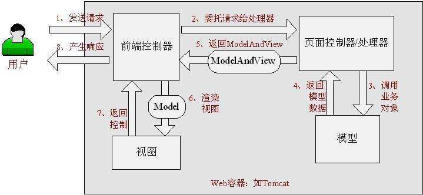 解释一下：
模型：连接（查询、增加、删除、修改）数据库的一些方法（函数）或其他方法（函数）。如连接Hibernate，SQL数据库的函数形成Model。 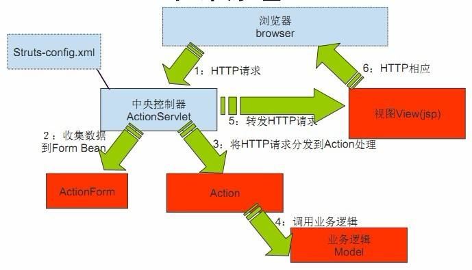 这张图片更好的说明SSH框架的Struts2 Hibernate Spring4的作用
Struts2： 1.充当Controller，把多个视图和对应的Action注册到Struts.xml中，其中Action就负责连接 业务模型并接受HTTP传入的参数。
Hibernate：数据库
Spring：视图
-
MVC的思想：将应用中各级组件按功能分类，不同的组件用不同的技术充当，使用严格的分层，各层以松耦合组织在一起，从而提供良好的封装。
3.2 Struts2的下载
3.2.1 下载地址
-
下载地址：http://struts.apache.org/download.cgi
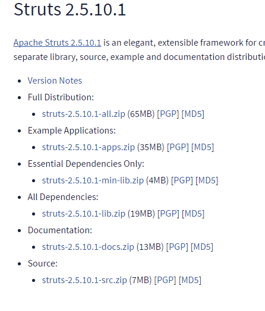介绍
- Full Distribution：完整版：示例应用、空示例应用、核心库、源代码和文档。
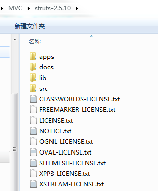
- apps：示例应用很多像Struts.xml和Hibernate.cfg.xml都可以在里面找到。
- docs：快速入门、文档、API文档。
- lib：核心类库、第三方插件类库。
- src：Struts框架源代码
- Example Applications：示例应用。
- Essential Dependencies Only：仅包含五个Struts核心库。一般开发就够了。 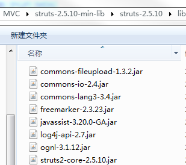
- Documentation:完整版：Struts使用文档、参考手册、API文档。
- Source：源代码。
- Full Distribution：完整版：示例应用、空示例应用、核心库、源代码和文档。
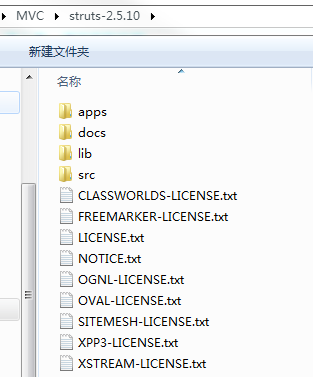
-
下载地址：http://struts.apache.org/download.cgi
3.3 Struts2的开发流程以登录为例
使用工具：MyEclipse 2015
- File-->New-->Web Project：注意配置版本 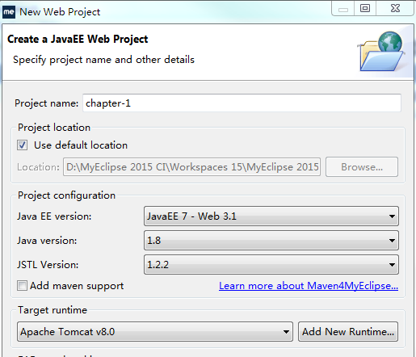
- WebRoot--》WEBINF--》添加content，并将index.jsp移入这里很重要。 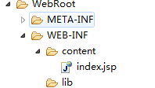
- 点中文件名New--》MyEclipse-->Project Facets--》InstallApache Struts（2.*）添加Struts.xml和web.xml配置文件这里没有（2.*是因为我已添加），你也可以在解压apps里面的示例 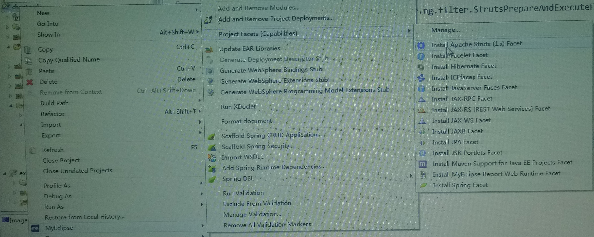
- 去掉Struts类库 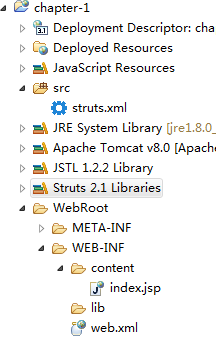
- 删除web.xml下的(.ng) 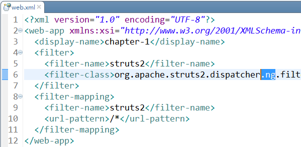
- 将Essential Dependencis Only中的核心类库添加到lib下 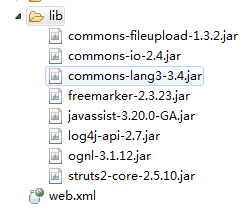
- 设置UTF-8中文编码 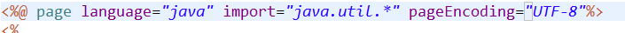
- 项目结构 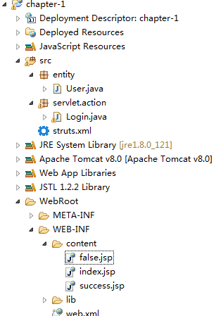
-
User实体Struts2通常直接使用Action来封装HTTP请求，因此UserAction类需要包含与请求参数对应的实例变量的setter和getter方法（不一定需要这些实例变量）。
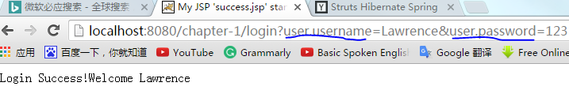
package entity; public class User { private String username; private String password; public String getUsername() { return username; } public void setUsername(String username) { this.username = username; } public String getPassword() { return password; } public void setPassword(String password) { this.password = password; } } -
LoginAction控制类
package servlet.action; import com.opensymphony.xwork2.ActionContext; import com.opensymphony.xwork2.ActionSupport; import entity.User; public class Login extends ActionSupport{ User user = new User(); public User getUser() { return user; } public void setUser(User user) { this.user = user; } public String execute() throws Exception{ if("Lawrence".equals(getUser().getUsername()) && "123".equals(getUser().getPassword())){ ActionContext.getContext().getSession() .put("user", getUser().getUsername()); System.out.println("success"); return SUCCESS; } System.out.println("false"); return "false"; } } - index.jsp登录页面 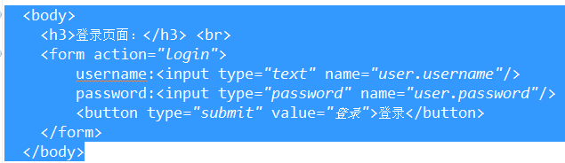
- success.jsp登录成功页面 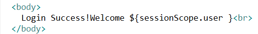
- false.jsp登录失败页面 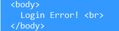
- 配置Struts 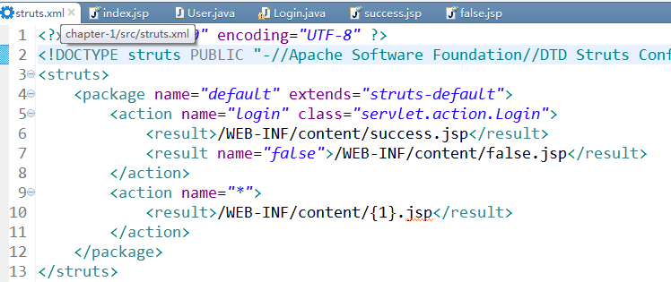
- 装入Tamcat 8里面并运行用户名：Lawrence 密码：123 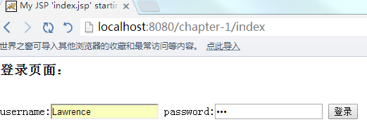
- 正确输入用户名：Lawrence 密码：123 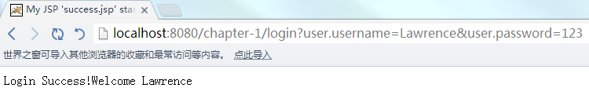
- 错误输入用户名：Lawrence 密码：null 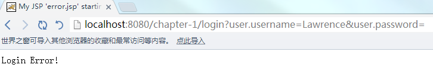
3.4 Struts2的规范配置
3.4.1 分解Struts.xml文件
-
分解Struts.xml文件用Include将臃肿的Struts.xml分解成Struts-part1.xml、Struts-part2.xml。。。。。

- 包含的Struts-part1.xml文件也需要配置DTD信息、Struts2配置文件的根元素。。。。 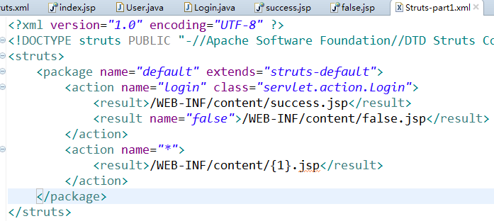
-
分解Struts.xml文件用Include将臃肿的Struts.xml分解成Struts-part1.xml、Struts-part2.xml。。。。。
3.5 Struts2 实现Action
3.5.1实现Action配置
- Struts2的开发 各种Action是应用的核心，Struts.xml文件配置用户请求与Action之间的对应关系，Action里面包含了处理（又包含模型Model）逻辑。 因此Acton类也被称为业务控制器。
-
实例变量可以封装请求参数和封装处理结果如下的tip，封装提示语言----“Login Success!Welcome Lawrence”和“Login Error!”
package servlet.action; import com.opensymphony.xwork2.ActionSupport; import entity.User; public class Login extends ActionSupport{ User user = new User(); private String tip; public String getTip() { return tip; } public void setTip(String tip) { this.tip = tip; } public User getUser() { return user; } public void setUser(User user) { this.user = user; } public String execute() throws Exception{ if("Lawrence".equals(getUser().getUsername()) && "123".equals(getUser().getPassword())){ setTip("Login Success!Welcome "+getUser().getUsername()); System.out.println("success"); return SUCCESS; } setTip("Login Error!"); System.out.println("false"); return SUCCESS; } } - Struts.xml配置 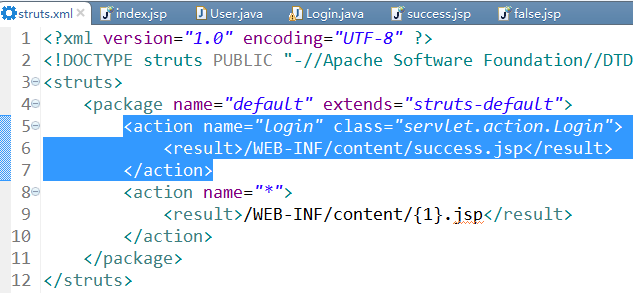
- 引入Struts标签库 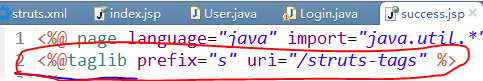
- 只有Success.jsp页面 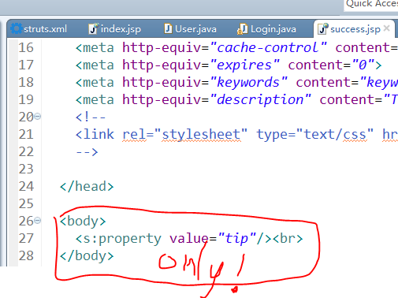
- 正确输入用户名：Lawrence 密码：123 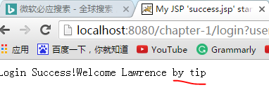
- 错误输入用户名：Lawrence 密码：null 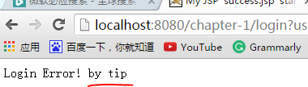
3.5.2ActionContext访问ServletAPI（解耦）
-
通过ActionContext访问ServletAPI（松耦合、解耦）ActionContext常用方法
static ActionCotext getContext():静态方法，获取系统的ActionContext实例。ActionContext ctx = ActionContext.getContext();
Map getApplication:模拟该应用的ServletContext实例。
Object get(object key):获得Put()ctx.getApplication().put("counter",counter);进去（session/request）的Map值ctx.getApplication().get("counter")
Map getSession():模拟HttpSession实例。ctx.getSession().put("user",getUsername());
Map put(key value):Put("counter",counter)一个Map值。
Map get():Get("counter")一个Map值。
Map setSession(Map session):直接传入一个Map实例，并转换为session()的属性值-属性名。
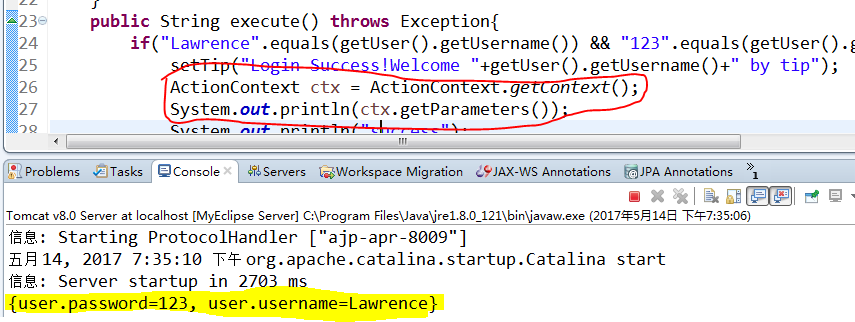 Map setApplication:直接传入一个Map实例，并转换为application()的属性值-属性名。
Map getParameters():获取所有的请求参数，类似HttpServletRequest().getParameterMap();
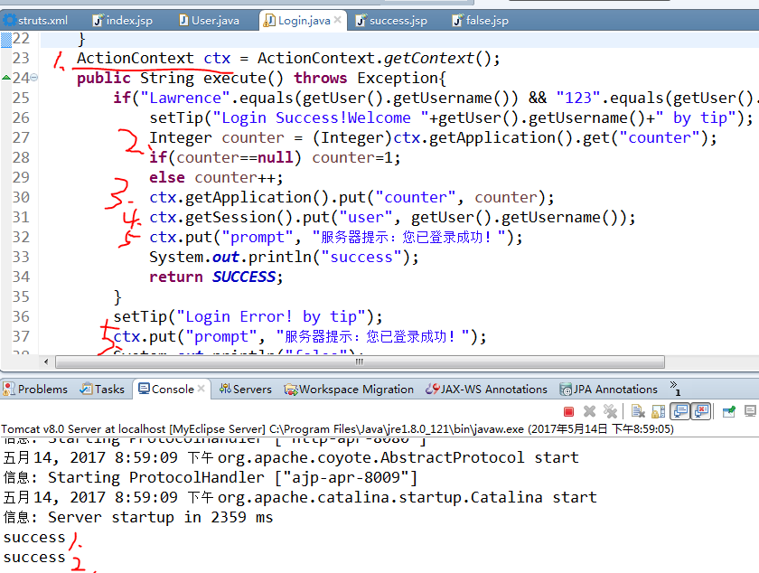 - 成功页面代码
-
成功页面结果但不知道为什么
ctx.put("prompt","value")没有岀来。 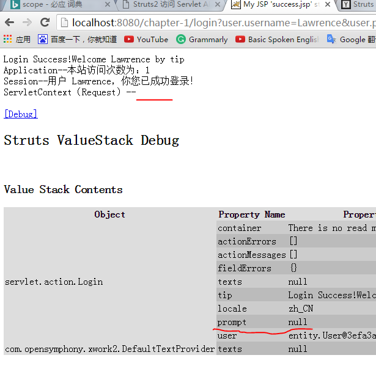 - 添加prompt的setter和getter方法就好了 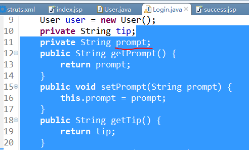 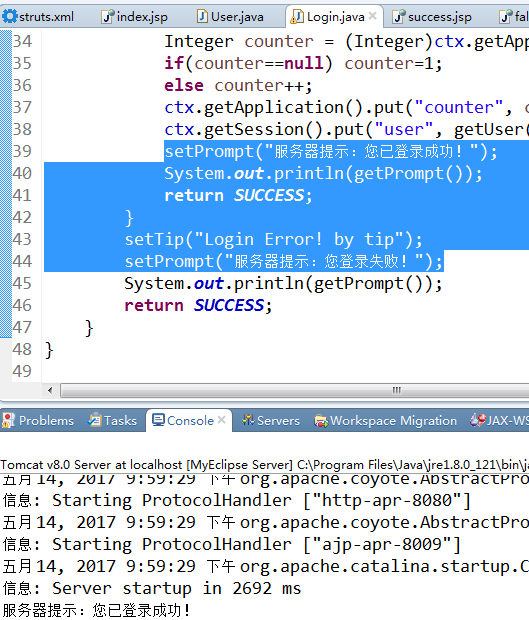
- 成功页面结果 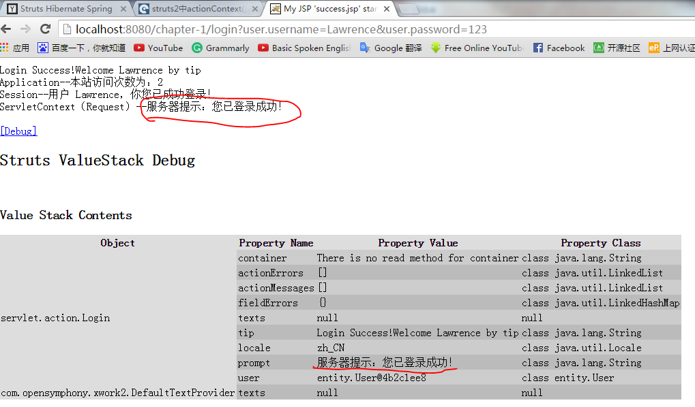
-
通过ActionContext访问ServletAPI（松耦合、解耦）ActionContext常用方法
3.5.3 ServletRequestAware、ServletResponseAware、ServletContextAware接口直接来访问 Servlet API ( 紧耦合 )
-
通过 ServletRequestAware、ServletResponseAware、ServletContextAware接口直接来访问 Servlet API ( 紧耦合 )
介绍一下
ServletRequestAware实现该接口的Action可以直接访问Web应用的HTTPServletRequest实例。需要实现@Override public void setServletRequest(HttpServletRequest request) { this.response=response; }接口
ServletResponseAware实现该接口的Action可以直接访问Web应用的HTTPServletResponse实例。需要实现@Override public void setServletResponse(HttpServletResponse response) { this.response=response; }接口
ServletContextAware实现该接口的Action可以直接访问Web应用的ServletContext实例。需要实现@Override public void setServletContext(HttpServletContext context) { this.response=response; }接口
以ServletResponseAware为例通过ServletResponseAware为系统添加Cookie对象，使用上面的登录系统。
package servlet.action; import javax.servlet.http.Cookie; import javax.servlet.http.HttpServletResponse; import org.apache.struts2.interceptor.ServletResponseAware; import com.opensymphony.xwork2.Action; import com.opensymphony.xwork2.ActionContext; import entity.User; public class Login implements Action,ServletResponseAware{ User user = new User(); private String tip; private HttpServletResponse response; //重写ServletResponseAware接口必须实现的方法 //setServletResponse(HttpServletResponse response)的参数代表Web应用对客户端的响应。 //并将该response设置成Login（Action）的实例变量，从而允许在Execute()访问HttpServletResponse对象。 @Override public void setServletResponse(HttpServletResponse response) { this.response=response; } public String getTip() { return tip; } public void setTip(String tip) { this.tip = tip; } public User getUser() { return user; } public void setUser(User user) { this.user = user; } public String execute() throws Exception{ if("Lawrence".equals(getUser().getUsername()) && "123".equals(getUser().getPassword())){ setTip("Login Success!Welcome "+getUser().getUsername()+" by tip"); Cookie c=new Cookie("user",getUser().getUsername()); c.setMaxAge(6);//访问一次服务器能保存多少秒 response.addCookie(c); return SUCCESS; } setTip("Login Error! by tip"); return SUCCESS; } }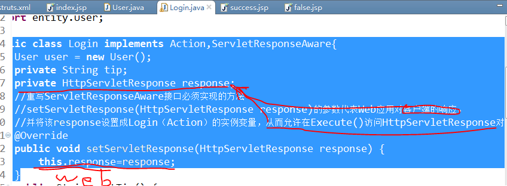 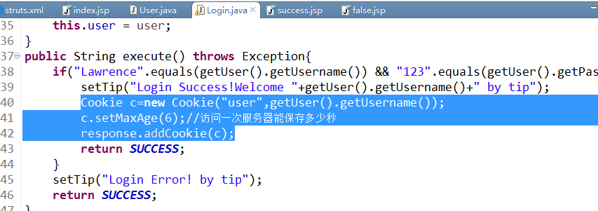 - 成功页面 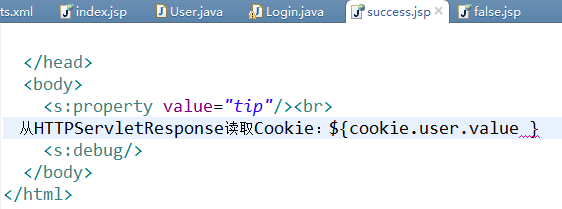
- 演示结果 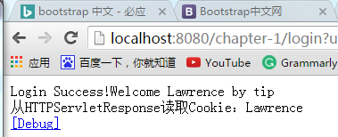
-
通过 ServletRequestAware、ServletResponseAware、ServletContextAware接口直接来访问 Servlet API ( 紧耦合 )
3.5.4 ServletActonContext接口来直接访问 Servlet API ( 紧耦合 )
-
通过 ServletActonContext接口来直接访问 Servlet API ( 紧耦合 )
介绍一下
static PageContext getPageContext():取得Web应用的PageContext对象。
static HttpServletRequest getRequest():取得Web应用的HttpServletRequest对象。
static HttpServletResponse getResponse():取得Web应用的HttpServletResponse对象
static ServletContext getServletContext():取得Web应用的ServletContext对象。
ServletActionContext.getResponse().addCookie();为例为系统添加Cookie对象，使用上面的登录系统。 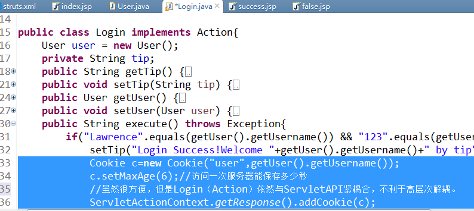 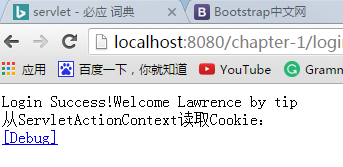 - 演示结果 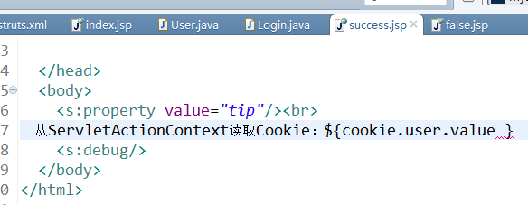
-
通过 ServletActonContext接口来直接访问 Servlet API ( 紧耦合 )
3.5.5 RequestAware、SessionAware 接口来直接访问 Servlet API ( 解耦 )
-
通过 RequestAware、SessionAware 接口来直接访问 Servlet API ( 松耦合、解耦 )
介绍一下
Action implements RequestAware：取得Web应用的HttpServletRequest对象。
Action implements SessionAware:取得Web应用的HttpServletSession对象。
SessionAware为例为系统添加Cookie对象，使用上面的登录系统。 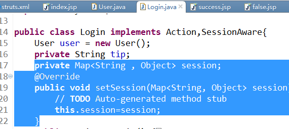 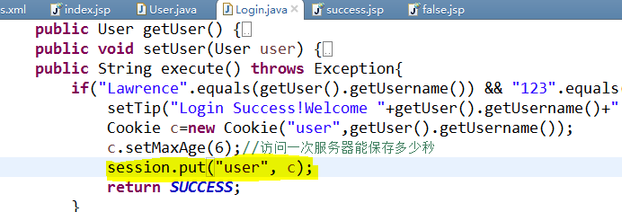 - 演示结果 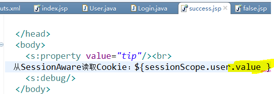
-
通过 RequestAware、SessionAware 接口来直接访问 Servlet API ( 松耦合、解耦 )
3.6 配置Action
3.6.1包和命名空间
-
包（package)
介绍一下
name（request）该包名，好似ID。
extends(option)继承其它包的Action、拦截器
namespace(option)一个包一个命名空间，一个namespace不允许有重名Action，但不同的namespace可以。
abstract(option)抽象包，该包不能包含Action。
-
命名空间（namespace）
介绍一下
缺省包(namespace="")缺省包，默认包，当任何一种包（如下面三种之一）里找不到目标Action时，就转到缺省包里找目标Action或目标JSP页面
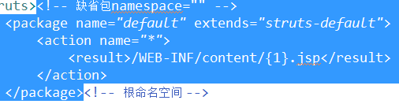
根命名空间 (namespace="/") 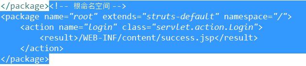
regist(namespace="/regist") 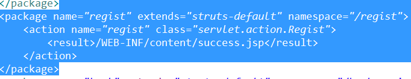
book(namespace="/bookservice/search") 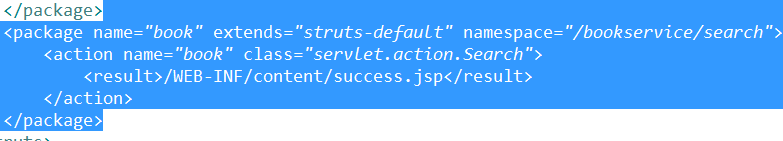
-
包（package)
3.6.2 Action的基本配置
-
Action 一个逻辑控制器，指定Action处理完后的视图资源。
介绍一下
nameAction名
methodAction里的具体方法，动态调用很重要（*通配符）。
classAction所以处理的请求的URL，一般配置如下图：
-
Action 一个逻辑控制器，指定Action处理完后的视图资源。
3.6.3 Action的动态方法调用
-
Struts2的动态调用方法存在安全问题，尽量少用。可以用下一节3.6.4的通配符。
-
设置动态方法调用常量在struts里加图中黄色代码
allowed-methods是配置允许动态调用的方法，如这里的regist 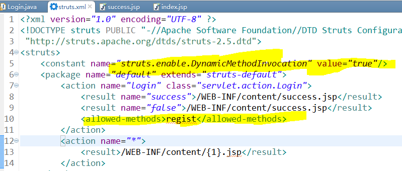 - 动态调用的regist方法 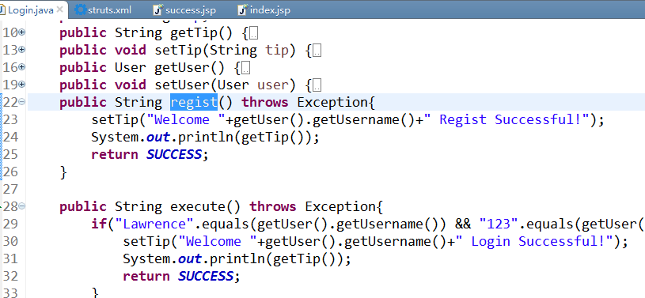
- 动态调用的javascript页面 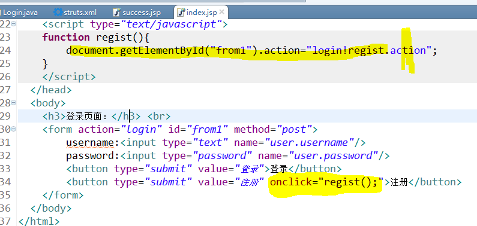
- 演示结果
-
注意
下面actionName!methodName中actionName是<action name="actionName"></action>中的名字，而不是具体的处理类的名字（class="servlet.Login.class"）
-
Struts2的动态调用方法存在安全问题，尽量少用。可以用下一节3.6.4的通配符。
3.6.4 指定method属性及使用通配符
- *号通配符*+字母--形成ActionName或ClassName，有ID的含义，不能重复。匹配时要加（字母）才能匹配上。如下：
-
需要开启（动态方法调用）如下图的1，2。action的名字是（*+Action）

- method匹配取的是｛*},所以Action中的方法名为*（login,regist）
- method匹配成功页面
-
注意 1
不可以在Action的｛{},｛MethodName｝，｛ClassName｝，｛MethodName，ClassName ｝｝使用*通配符。如下： -
注意 2
不要让超链接直接链接到某视图资源，有风险。尽量发送给Struts2框架后，让Struts2框架处理。 -
对abcAction.action请求，有Action的Name为（顺序为）｛｛abcAction｝，｛*Action｝，｛*｝｝。肯定是被abcAction处理，
那要是｛｛*Action｝，｛*｝，｛abcAction｝｝或｛｛*Action｝，｛*｝，｛abcAction｝｝又会被那个处理呢？
答案是*Action和*没有优先级之分，谁在前谁先匹配。因此它们的先后顺序为｛｛abcAction｝，｛*Action｝，｛*｝｝
3.6.5 配置默认Action
- 添加自己的默认Action准备做一个例子的，太菜了。我也很无奈啊！
3.6.6 配置默认class处理类
- 添加自己的默认Action准备做一个例子的，太菜了。我也很无奈啊！
3.7 配置处理结果
3.7.1 理解Struts的处理流程
-
理解Struts的处理流程
图一
图二
图三
如图一MVC就是（5）Model（组件：对数据库的增删改查的封装方法class类，和其它具体Project的业务逻辑方法） （6）View（Jsp、FreeMarker等等物理视图资源）（2）Controlor（控制器：框架内部的控制流程和处理机制。如对网站的保护、对Struts.xml控制等等）, 控制器在web.xml中配置。Struts2的核心控制器为FilterDispatcher，如图二。
介绍一下
1User用户，它可以直接发送请求（HttpServlet Request）或点击各种业务按钮来间接发送请求（HttpServlet Request）。
2控制器图二的FilterDispatcher（过滤器调度器）是Struts2的最核心控制器，还有ActionContextCleanUp -->OtherFilters-->SiteMesh等；提交请求也是这个顺序，最后才是FilterDispatcher（过滤器调度器）。 请求到达FilterDispatcher（过滤器调度器）时，FilterDispatcher（过滤器调度器）就询问ActionMapper（业务控制器映射器）是否调用Action（业务控制器）处理此请求，YES就将请求交给业务控制器代理（ActionProxy）。
3StrutsActionProxy(业务控制器代理）通过Struts.xml配置文件找到需要调用的ActionClass（业务控制类），如图三。这里不是直接调用目标ActonClass（业务控制类）， 而是ActionProxy（业务控制器代理）还要创建一个ActionInvocation（控制器启用拦截器）实例，在调用之前，ActionInvocation（控制器启用拦截器）会根据配置加载ActionClass（业务控制类） 相关的所有Interceptor（拦截器），对请求（HttpServlet Request）进行过滤。再转到目标ActionClass。
4Action业务控制器，供Struts.xml调用，里面又调用了很多业务逻辑组件，并将它们有机的组成据有现实功能的业务器。
5组件业务逻辑组件，它是工程开发的核心，封装对数据库的实现类和其它各种工程的业务实现类。
6JSP物理视图地址，可以是JSP、FreeMarker等等。
注意：打个比方1User在开车。1User可以加油门、踩刹车、开雨刷、开各个窗口、开各个灯等等，4Action就是这些功能的不同控制器，4Action之所以可以当控制器， 是因为它连接了不同功能的接口。像发动机、制动系统等等都是5组件。3Struts就是一个座驾前的开关，可以调用4Action--》--》5组件来控制汽车。
-
3.7.5 转发与重定向
-
forward（转发）---type=dispatcher将请求forward（转发）到指定JSP资源。可以用于转发到Welcome或Login页面。
redirect（重定向）---type=redirect将请求redirect（重定向）到指定视图资源
不同：
重定向会丢失所有的请求参数、请求属性和Action的处理结果。注意：
重定向不要定向到/WEB-INF/下，因为这里面的资源是受保护的。 - Struts配置dispatcher
- index登录页面
- LoginAction业务处理页面
- 登录结果
- 重定向的视图资源
-
forward（转发）---type=dispatcher将请求forward（转发）到指定JSP资源。可以用于转发到Welcome或Login页面。
redirect（重定向）---type=redirect将请求redirect（重定向）到指定视图资源
3.7.6 转发业务控制器（redirectAction）
- redirectAction（重定向业务控制器）---type=redirectAction将一个Action的处结果定向到另一个Action。会丢失前一个Action的所有处理结果、请求参数、请求属性。
- Struts配置dispatcher
3.7.7 动态结果
- 动态转入视图资源通过在Action的name、class、method、result中使用通配符（*）；
- Struts使用通配符
3.7.8 Action属性值决定物理视图资源
- 通过${属性名.属性名...}配置Action的result。Action的name尽量不要用MyDefault，MyAction什么的。
- ${target}.jsp
- aaa.class业务控制器
- 输入success
- 项目Content
- success.jsp页面
- 输入success的结果
- welcome.jsp页面
- 输入welcome结果
3.7.10 使用PreResultListener
- 通过ActionInvocation（3.7.8提过）的addPreResultListener（）方法添加PreResultListener具体实现如下图，实现一个小日历。也可以加日志。
- index页面
- index.jsp实现
- struts业务控制器代理
- Login.class业务控制器
- success.jsp页面
- success.jsp页面显示结果
3.8 配置Struts的异常处理
3.8.1 Struts2的异常处理机制
-
略
-
3.8.2 SQLException和Exception（声明式）异常捕捉
- Login.class声明:SQLException和Exception两种异常捕捉。
-
SQLExceptionsqlE.jsp -
SQLExceptionindex.jsp的输入 -
SQLExceptionsqlE.jsp的显示结果 -
Struts.xml注意：Struts里面去掉了
return "false"的物理资源。因此登录失败就抛出Exception异常。 -
ExceptionE.jsp代码 -
Exceptionindex.jsp的错误输入 -
ExceptionE.jsp的显示结果
3.8.3 输出异常信息
-
略
-
3.9 Convention插件与“约束”支持
-
-
略
-
3.10 使用Struts的国际化
-
-
略
-
3.11 Struts的标签库
总一些重要的标签。
- action在Jsp页面直接调用Action。
- debug看当前ValueStack和StackContext中的内容。
- include在Jsp页面包含其它Jsp或Servlet资源。
- property输出ValueStack、StackContext和ActionContext中的值。
- token防止重复提交。重复提交的视图。
- bean¶m向Action传值。
第肆章 深入学习Struts
4.1 Struts的类型转换
-
-
略
-
4.2 Struts的输入校验
-
-
略
-
4.3 Struts控制上传文件
- 4.3.1 Struts2的文件上传所需的jar包
- commons-io-××.jarcommons-fileupload-×××.jar,添加这两个JAR文件后，还应该将表单的method="post" enctype="multipart/form-data"
- 4.3.1 实现Struts2的文件上传
-
略
-
4.4 Struts控制下载文件
-
-
略
-
4.5 Struts的拦截器
-
-
略
-
4.6 Struts的Ajax支持
-
-
略
-
第伍章 Hibernate基本应用
5.1 ORM与Hibernate
-
-
Hibernate：一种面向对象的数据库
-
5.2 Hibernate入门
-
- 直接上例子 将一个人的名字、年龄、地址信息存入数据库也是一个一对一的关连。 这里不需要Struts和Spring
- 我使用的是Hibernate-5.2.8Final
- 下载地址Http://hibernate.org/orm 翻墙一下我用的是Lantern或Psiphon
- Person.class对象略去getter和setter方法
- Address.class对象略去getter和setter方法；多了两个构造方法，方便创建对象。
- PersonImp.java实现方法
- 工程结构
-
配置文件和添加JAR包JAR包是required和c3p0里的

- 运行PersonImp.java就可以了就有两张表
-
如何使用Myeclipse的Derby
- 进官网下载一个Derby我用的db-derby-10.8.3.0
- 在Myeclipse中配置Derby
- 在Myeclipse中开服务器
-
在Myeclipse中开Derby

5.3 Hibernate体系结构
-
-
略
-
5.4 Hibernate配置
-
-
略
-
5.5 持久化对象
略
5.6 Hibernate映射
略
5.7 映射组件属性
略
5.8 使用传统的映射文件
略
第陆章 深入学习Hibernate
6.1 Hibernate关联映射
略
6.2 继承映射
略
6.3 Hibernate批量处理
略
6.4 HQL语句查询
略
6.5 查询条件
略
6.6 SQL查询
略
6.7 数据过滤
略
6.8 事务控制
略
6.9 二级缓存和查询缓存
略
6.10 事件机制
略
第柒章 Spring基本应用
7.1 Spring 4.0的变化
略
7.2 Spring入门
略
7.3 Spring依赖注入
略
7.4 Spring容器
略
7.5 Spring容器中的Bean
略
7.6 Spring 3.0提供的Java配置管理
略
7.7 Bean的三种创建方法
略
7.8 深入理解Bean
略
7.9 Bean的生命周期
略
7.10 高级依赖关系配置
略
7.11 XML Schema的简化配置
略
7.12 Spring 3.0提供的表达式语言
略
第捌章 深入学习Spring
8.1 两种后处理器
略
8.2 Spring的“零配置支持”
略
8.3 资源访问
略
8.4 Spring的AOP
略
8.5 Spring 3.1新增的缓存机制
略
8.6 Spring的事物
略
8.7 Spring整合Struts 2
略
8.8 Spring整合Hibernate
略
8.9 Spring整合JPA
略
第玖章 企业应用开发的思路和策略
9.1 企业应用开发面临的挑战
略
9.2 如何面对挑战
略
9.3 常见的设计模式精讲
略
9.4 常见的架构设计策略
略
9.5 小结
略
第拾章 简单工作流系统
10.1 项目背景及系统结构
略
10.2 Hibernate持久层
略
4.3 事项DAO
略
4.4 实现Service层
略
10.5 实现任务的自动调度
略
10.6 实现系统Web层
略
第叁章 Struts基本应用
- 3.1 MVC思想
- 3.2 Struts2的下载
- 3.3 Struts2的开发流程
- 3.4 Struts2的规范配置
- 3.5 Struts2 实现Action
- 3.6 配置Action
- 3.7 配置处理结果
- 3.8 配置Struts的异常处理
- 3.9 Convention插件与“约束”支持
- 3.10 使用Struts的国际化
- 3.11 Struts的标签库
第肆章 深入学习Struts
第伍章 Hibernate基本应用
- 5.1 ORM与Hibernate
- 5.2 Hibernate入门
- 5.3 Hibernate体系结构
- 5.4 Hibernate配置
- 5.5 持久化对象
- 5.6 Hibernate映射
- 5.7 映射组件属性
- 5.8 使用传统的映射文件
第陆章 深入学习Hibernate
- 6.1 Hibernate关联映射
- 6.2 继承映射
- 6.3 Hibernate批量处理
- 6.4 HQL语句查询
- 6.5 查询条件
- 6.6 SQL查询
- 6.7 数据过滤
- 6.8 事务控制
- 6.9 二级缓存和查询缓存
- 6.10 事件机制
第柒章 Spring基本应用
- 7.1 Spring 4.0的变化
- 7.2 Spring入门
- 7.3 Spring依赖注入
- 7.4 Spring容器
- 7.5 Spring容器中的Bean
- 7.6 Spring 3.0提供的Java配置管理
- 7.7 Bean的三种创建方法
- 7.8 深入理解Bean
- 7.9 Bean的生命周期
- 7.10 高级依赖关系配置
- 7.11 XML Schema的简化配置
- 7.12 Spring 3.0提供的表达式语言
第捌章 深入学习Spring
- 8.1 两种后处理器
- 8.2 Spring的“零配置支持”
- 8.3 资源访问
- 8.4 Spring的AOP
- 8.5 Spring 3.1新增的缓存机制
- 8.6 Spring的事物
- 8.7 Spring整合Struts 2
- 8.8 Spring整合Hibernate
- 8.9 Spring整合JPA